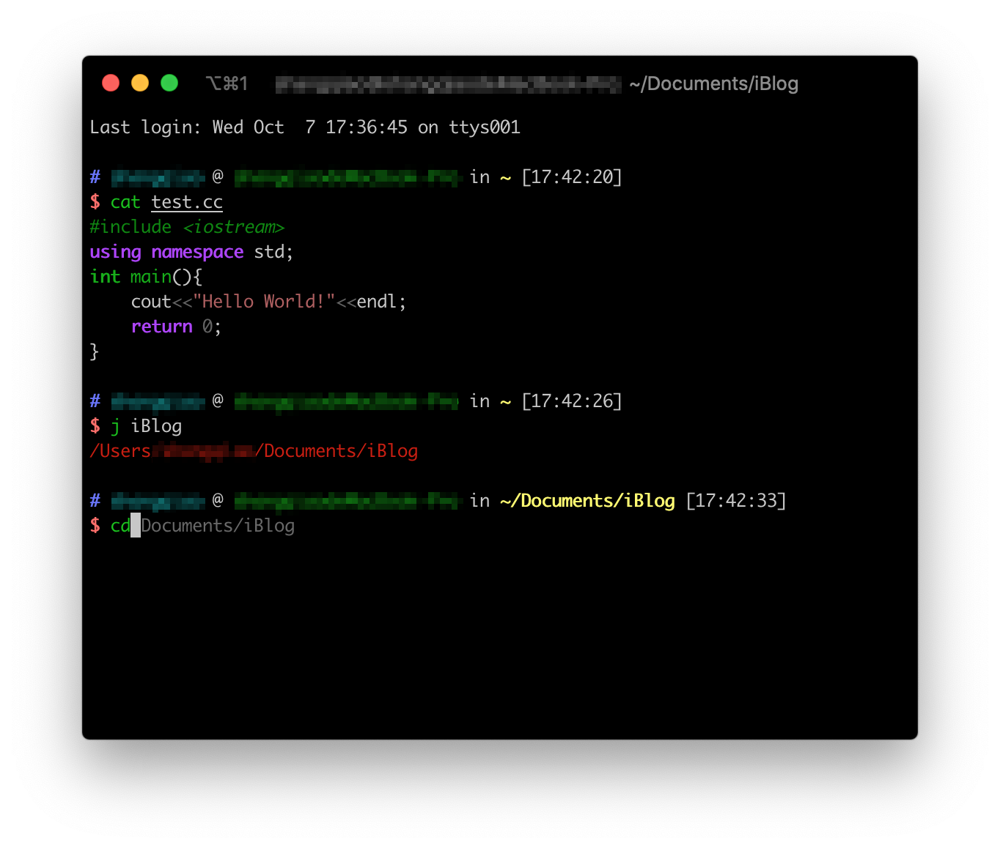

通过插件提升类Unix操作系统的终端体验
对于类Unix操作系统的用户来说，终端大概是除专业软件以外使用频率最高的应用程序了。因此，对其进行少量配置以加强基础命令的功能能够有效提升日常体验，比如：
自动跳转到曾经使用过的文件夹而不需要不断使用 tab 补全目录
识别命令是否存在
显示曾经使用过的命令以辅助补全
除此以外，正如代码着色大幅提高了代码的可读性，让软件的帮助文档告别黑白，对不同内容进行着色显示也能有效提高 man 和 help 的阅读体验。甚至连预览文本最基础的 cat 和 less 命令，也能拥有代码着色，尽管使用场景比较少，但到了要用的时候也能提升部分体验。
除了加强命令的功能以外，设置哪些内容常驻在终端中也是一个提升体验的方法。众所周知，终端中最重要的信息大概有：
- 当前用户
- 当前主机
- 当前目录
- 时间
- git 状态
尽管通过各种命令可以临时显示它们，但计算机最重要的一个话题就是自动化，能少敲键盘就要少敲。
本文就是为了教你配置以上内容，由于最近使用 macOS 比较多，本文接下来的内容将使用 macOS 的配置方法来举例，并且默认读者已经在使用 zsh。其他类Unix操作系统的用户可以举一反三自行完成配置。
美化加强后的终端

下载安装所需软件
执行本小节的命令，依次安装 Oh My Zsh、Homebrew、Pygment、autojump、zsh-autosuggestions、zsh-syntax-highlighting。
安装 Oh My Zsh
Oh My Zsh 是一个社区驱动的插件管理器，使用它可以大幅简化 Zsh 的配置步骤，尽管有人嫌弃它过重，但实际上对于近几年购买的正常配置的电脑来说并不会让终端卡顿。
如果你可以正常访问 Github，可以执行以下命令安装 Oh My Zsh：
1 | |
如果你访问 Github 有困难，也可以从国内的 Gitee 安装 Oh My Zsh：
1 | |
安装 Homebrew、Pygment、autojump
这一步中最重要的就是安装 Homebrew，它是后面两个软件安装的基础。
安装 Homebrew
Homebrew 是一个类似于 Pacman/APT 的包管理器，尽管使用体验上远逊于它们（尤其是，很多带 GUI 的软件没有国内的 cask 镜像源，如果访问 Github 有难处的话，Homebrew 经常没有下载速度），但在 macOS 上我们的可选项不多，并且 Homebrew 是生态最好的一个。通过 Homebrew，我们可以更方便地安装各种软件。
如果你可以正常访问 Github，可以执行以下命令安装 Homebrew：
1 | |
如果你访问 Github 有困难，也可以从国内带 Gitee 安装 Homebrew：
1 | |
配置 Homebrew 国内镜像
清华大学开源软件镜像站的国内源总是最可靠的那个，所以我们要将 Homebrew 的镜像替换到它提供的地址。
首先额外添加常用仓库：
1
2
3brew tap homebrew/cask
brew tap homebrew/cask-drivers
brew tap homebrew/cask-fonts然后替换现有上游：
1
2
3
4
5
6git -C "$(brew --repo)" remote set-url origin https://mirrors.tuna.tsinghua.edu.cn/git/homebrew/brew.git
git -C "$(brew --repo homebrew/core)" remote set-url origin https://mirrors.tuna.tsinghua.edu.cn/git/homebrew/homebrew-core.git
git -C "$(brew --repo homebrew/cask)" remote set-url origin https://mirrors.tuna.tsinghua.edu.cn/git/homebrew/homebrew-cask.git
git -C "$(brew --repo homebrew/cask-fonts)" remote set-url origin https://mirrors.tuna.tsinghua.edu.cn/git/homebrew/homebrew-cask-fonts.git
git -C "$(brew --repo homebrew/cask-drivers)" remote set-url origin https://mirrors.tuna.tsinghua.edu.cn/git/homebrew/homebrew-cask-drivers.git
brew update最后替换二进制预编译包的镜像：
1
2echo 'export HOMEBREW_BOTTLE_DOMAIN=https://mirrors.tuna.tsinghua.edu.cn/homebrew-bottles' >> ~/.zprofile
source ~/.zprofile安装 Pygment、autojump
由于清华源内有这两个软件的镜像，所以执行：
1 | |
等待片刻即可完成安装。
安装 zsh-autosuggestions、zsh-syntax-highlighting
依次执行：
1 | |
如果遇到网络问题，可以使用手机热点进行下载。
配置 Zsh
首先执行：
1
vim .zshrc将
.zshrc文件内的ZSH_THEME行改为：1
2# 一切都刚刚好的 Zsh 主题，能够常驻显示一切必要的终端信息
ZSH_THEME="ys"将
.zshrc文件内的plugins行改为：1
plugins=(git colorize colored-man-pages autojump xcode zsh-syntax-highlighting zsh-autosuggestions)在
.zshrc文件的末尾添加：1
2alias cat="ccat"
alias less="cless"接下来，重启终端，就可以随心所欲地使用终端了。
使用须知
在配置的最后我们让 cat 和 less 都默认使用了代码着色，所以之后使用这两个命令的时候可能要等待片刻才能得到文件内容。如果嫌弃这样的效果，可以将之前在
.zshrc文件末尾添加的那两行alias删除man 手册内的文档可以直接着色显示，对于其他的帮助文档，也可以通过在命令开头加入
colored来尝试着色，比如：1
colored git help clone通过使用
j命令可以快速跳转到曾经cd过的目录，比如：1
2
3
4
5# 首先我 cd 到我的静态博客网站目录一次
cd ~/Documents/iBlog
# 以后再次想要访问这个目录就可以直接
j iBlog
# 熟悉之后就可以在整个文件系统中高速跳转啦
本博客所有文章除特别声明外，均采用 CC BY-SA 4.0 协议 ，转载请注明出处！